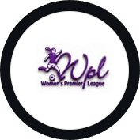

THE NOTEBOOK / 2026 / 27
Latest Football News.
One sharp home for the stories, voices and matchday details moving Tanzanian football across all four competitions.
4 competitionsFresh from the touchline
01 / THE FRONT PAGE
Featured stories.
02 / THE LATEST
News now.
Showing the latest stories
03 / MATCHDAY
Match news.
04 / THE CLUBHOUSE
Transfers & club news.
05 / THE PEOPLE
Player stories.
06 / WOMEN'S FOOTBALL
Her game, her stage.
The Women's Premier League deserves its own front row. Follow the players, clubs and moments building the next chapter.

07 / THE LEAGUE DESK
Official updates.
THE NOTEBOOK KEEPS MOVING
Stay close to the game.
New stories land every matchweek, from the biggest fixtures to the details that deserve a second look.